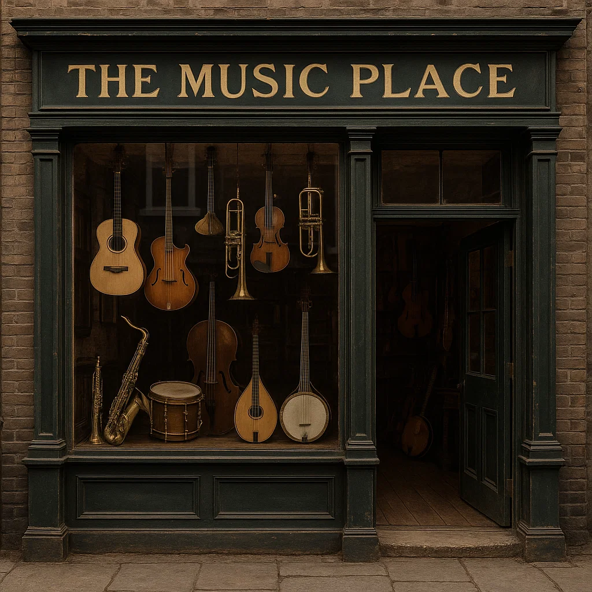

The Music Place nació en 1928 con la idea de acercar la música a todos, desde principiantes hasta profesionales.
Hoy en día nos caracteriza un estilo moderno, minimalista y cercano, dentro de la galería comercial donde nos ubicamos.
Creemos que la música transforma y por eso buscamos ofrecer productos y atención personalizada para que cada cliente encuentre lo que necesita para expresarse.
